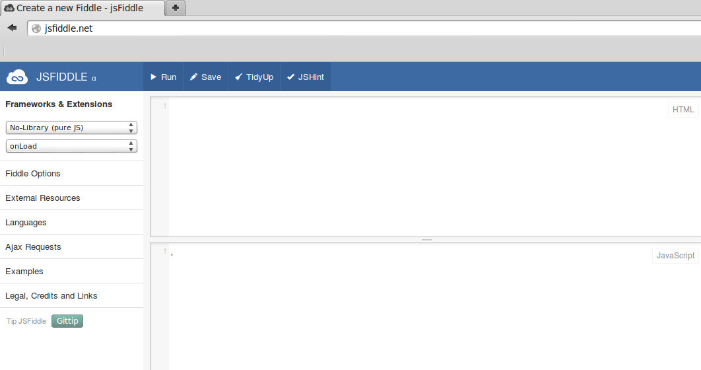

Avant de commencer réellement notre apprentissage du JavaScript (et donc de la programmation), nous allons devoir nous familiariser avec notre environnement de travail.
Après avoir lancé le navigateur Firefox, taper http://jsfiddle.net/ dans la barre d'adresse.
Vous devriez voir apparaître ceci :
Nous allons pour l'instant uniquement utiliser la fenêtre « JavaScript » et la fenêtre « Result ».
Traditionnellement, les "apprentis programmeurs" commencent leur "carrière" en écrivant un programme qui permet d'afficher à l'écran le message "Hello World !". Nous n'allons pas déroger à cette tradition. En JavaScript, il suffit d'une "instruction" pour afficher ce message (notez bien que selon le langage utilisé cela peut-être plus complexe) :
document.write("hello world !");
Recopier cette instruction dans la fenêtre JavaScript et appuyer sur le bouton Run.
Vous devriez voir le message hello world ! s'afficher dans la fenêtre « Result ».
Bravo, vous venez d'écrire votre premier programme !
Nous verrons par la suite qu'il est possible d'utiliser des guillemets simples ' à la place de "
Écrivez un programme qui affichera votre prénom à l'écran.
Testez votre programme avec JSFIDDLE